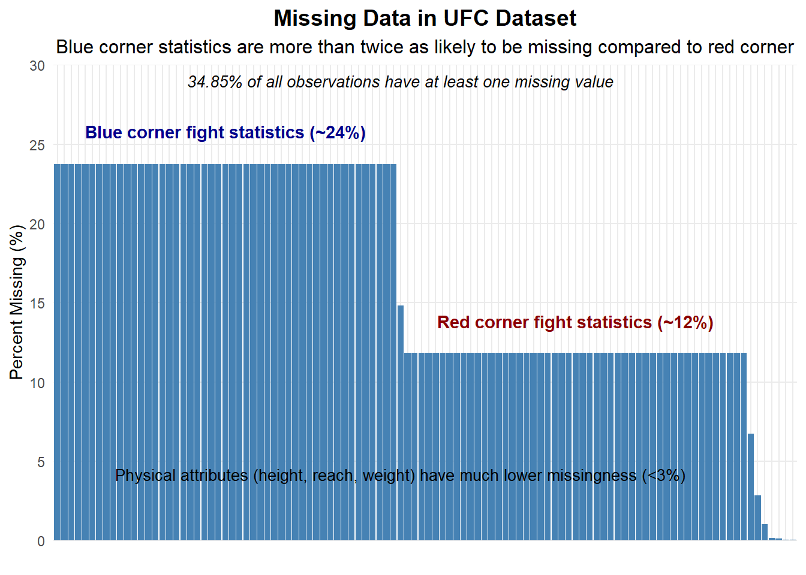

#Check if entire rows are missingrows_missing_count <-rowSums(is.na(ufc_data))rows_with_any_missing <-sum(rows_missing_count >0)cat("Number of rows with at least one missing value:", rows_with_any_missing, "(", round(rows_with_any_missing/nrow(ufc_data)*100, 2), "%)\n")
Number of rows with at least one missing value: 2095 ( 34.85 %)
#informative visualization for missing dataggplot(missing_data, aes(x =reorder(column, -percent), y = percent)) +geom_bar(stat ="identity", fill ="steelblue") +theme_minimal() +theme(axis.text.x =element_blank(), plot.title =element_text(hjust =0.5, face ="bold", size =14),plot.subtitle =element_text(hjust =0.5, size =12),panel.grid.minor =element_blank() # Remove minor grid lines ) +labs(title ="Missing Data in UFC Dataset",subtitle ="Blue corner statistics are more than twice as likely to be missing compared to red corner",x ="",y ="Percent Missing (%)" ) +scale_y_continuous(limits =c(0, 30),breaks =seq(0, 30, by =5),expand =c(0, 0) ) +annotate("text", x =25, y =25, label ="Blue corner fight statistics (~24%)", vjust =-0.5, hjust =0.5, fontface ="bold", color ="darkblue") +annotate("text", x =75, y =13, label ="Red corner fight statistics (~12%)", vjust =-0.5, hjust =0.5, fontface ="bold", color ="darkred") +annotate("text", x =50, y =3, label ="Physical attributes (height, reach, weight) have much lower missingness (<3%)",vjust =-1, hjust =0.5, size =3.5) +# Add a note about the impact at the top of the plotannotate("text", x =50, y =29, label ="34.85% of all observations have at least one missing value",hjust =0.5, fontface ="italic", size =3.5)

pattern of missingness
Temporal Pattern Analysis: Is missingness more common in older fights?
ufc_data$date <-as.Date(ufc_data$date)ufc_data$year <-format(ufc_data$date, "%Y")#Calculate percentage of missing values by yearmissing_by_year <- ufc_data %>%group_by(year) %>%summarize(total_fights =n(),missing_blue_stats =sum(is.na(B_avg_KD)),missing_red_stats =sum(is.na(R_avg_KD)),pct_missing_blue = missing_blue_stats / total_fights *100,pct_missing_red = missing_red_stats / total_fights *100 )#Reshape data for plottingmissing_by_year_long <- missing_by_year %>%select(year, pct_missing_blue, pct_missing_red) %>%pivot_longer(cols =c(pct_missing_blue, pct_missing_red),names_to ="corner",values_to ="percentage" ) %>%mutate(corner =ifelse(corner =="pct_missing_blue", "Blue Corner", "Red Corner"))#Visualize with proper groupingggplot(missing_by_year_long, aes(x = year, y = percentage, color = corner, group = corner)) +geom_line() +geom_point() +labs(title ="Missing Values by Year",y ="Percentage Missing", x ="Year",color ="Fighter Corner") +theme_minimal() +theme(axis.text.x =element_text(angle =45, hjust =1))
#Extract fighter-specific random effectsred_fighter_effects <-ranef(mixed_model)$R_fighter_idblue_fighter_effects <-ranef(mixed_model)$B_fighter_id#Create dataframes with fighter IDs and their random effectsred_fighter_df <-data.frame(R_fighter_id =as.integer(rownames(red_fighter_effects)),R_fighter_effect = red_fighter_effects[,1])blue_fighter_df <-data.frame(B_fighter_id =as.integer(rownames(blue_fighter_effects)),B_fighter_effect = blue_fighter_effects[,1])#Add fighter random effects to the original datasetufc_model_data_with_effects <- ufc_model_data %>%left_join(red_fighter_df, by ="R_fighter_id") %>%left_join(blue_fighter_df, by ="B_fighter_id") %>%mutate(R_fighter_effect =ifelse(is.na(R_fighter_effect), 0, R_fighter_effect),B_fighter_effect =ifelse(is.na(B_fighter_effect), 0, B_fighter_effect) )#Create a new feature that represents the difference in fighter-specific effectsufc_model_data_with_effects$fighter_effect_diff <- ufc_model_data_with_effects$R_fighter_effect - ufc_model_data_with_effects$B_fighter_effectprint(summary(red_fighter_df$R_fighter_effect))
Min. 1st Qu. Median Mean 3rd Qu. Max.
-0.3172424 -0.0689615 -0.0160303 -0.0005866 0.0593580 0.5268780
print(summary(blue_fighter_df$B_fighter_effect))
Min. 1st Qu. Median Mean 3rd Qu. Max.
-5.268e-02 -5.648e-03 2.082e-03 -4.671e-05 5.591e-03 2.955e-02
#training (80%) and testing (20%)set.seed(123) # For reproducibilitytrain_index <-createDataPartition(model_data$target, p =0.8, list =FALSE)train_data <- model_data[train_index, ]test_data <- model_data[-train_index, ]table(train_data$target)
#Create a new data frame with only the selected variablesselected_data <- model_data %>%select(all_of(c(selected_vars, "target")))#Split the selected data into training and testing setsselected_train_data <- selected_data[train_index, ]selected_test_data <- selected_data[-train_index, ]# Logistic Regression Modellog_model <-glm(target ~ ., data = selected_train_data, family = binomial)#logistic regression modellog_summary <-summary(log_model)print(log_summary)
Call:
glm(formula = target ~ ., family = binomial, data = selected_train_data)
Coefficients:
Estimate Std. Error z value Pr(>|z|)
(Intercept) 0.113627 0.074472 1.526 0.12707
reach_advantage 0.013726 0.004919 2.791 0.00526 **
age_advantage -0.072369 0.008107 -8.927 < 2e-16 ***
R_longest_win_streak 0.048313 0.018747 2.577 0.00996 **
striking_accuracy_diff 0.402195 0.258840 1.554 0.12022
striking_defense_diff 1.185563 0.267975 4.424 9.68e-06 ***
takedown_accuracy_diff 0.171252 0.116280 1.473 0.14082
takedown_defense_diff 0.246591 0.126940 1.943 0.05207 .
R_avg_SUB_ATT 0.145188 0.071022 2.044 0.04093 *
---
Signif. codes: 0 '***' 0.001 '**' 0.01 '*' 0.05 '.' 0.1 ' ' 1
(Dispersion parameter for binomial family taken to be 1)
Null deviance: 3768.6 on 2754 degrees of freedom
Residual deviance: 3615.3 on 2746 degrees of freedom
AIC: 3633.3
Number of Fisher Scoring iterations: 4
#Calculate feature importance based on absolute z-valuesz_values <-abs(log_summary$coefficients[, "z value"][-1]) # Exclude interceptlog_importance <-data.frame(Variable =names(z_values),Importance = z_values)log_importance <- log_importance %>%arrange(desc(Importance))#top important featurescat("\nMost important predictors:\n")
#predictions on the test setrf_predictions <-predict(rf_model, newdata = test_data, type ="prob")[,2]rf_pred_class <-predict(rf_model, newdata = test_data)rf_confusion <-confusionMatrix(rf_pred_class, test_data$target)rf_roc <-roc(as.numeric(test_data$target), rf_predictions)
Setting levels: control = 1, case = 2
Setting direction: controls < cases
rf_auc <-auc(rf_roc)cat("\nRandom Forest Model Performance:\n")
Random Forest Model Performance:
print(rf_confusion)
Confusion Matrix and Statistics
Reference
Prediction 0 1
0 122 109
1 187 270
Accuracy : 0.5698
95% CI : (0.5318, 0.6071)
No Information Rate : 0.5509
P-Value [Acc > NIR] : 0.169
Kappa : 0.1098
Mcnemar's Test P-Value : 7.622e-06
Sensitivity : 0.3948
Specificity : 0.7124
Pos Pred Value : 0.5281
Neg Pred Value : 0.5908
Prevalence : 0.4491
Detection Rate : 0.1773
Detection Prevalence : 0.3358
Balanced Accuracy : 0.5536
'Positive' Class : 0
# Visualization for Random Forest variable importancelibrary(ggplot2)# Variable importance plot (already in your code, but refined for presentation)var_importance_df <-data.frame(Variable =rownames(importance(rf_model)),MeanDecreaseGini =importance(rf_model)[, "MeanDecreaseGini"]) %>%arrange(desc(MeanDecreaseGini))# Top 10 variables plotggplot(head(var_importance_df, 10), aes(x =reorder(Variable, MeanDecreaseGini), y = MeanDecreaseGini)) +geom_bar(stat ="identity", fill ="darkgreen") +coord_flip() +labs(title ="Top 10 Important Features in Random Forest Model",x ="",y ="Mean Decrease in Gini") +theme_minimal()